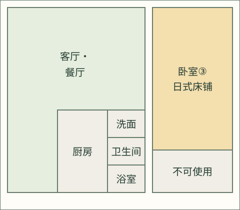
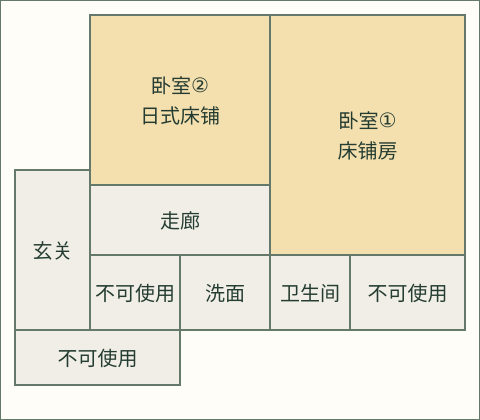

日本茨城县那珂市里山 ・ 整栋独享原木小屋
沉浸于自然怀抱，属于大家的原木小屋丸太小屋・萤
坐落于那珂市宁静里山之中的整栋独享原木小屋。宽敞舒适的空间最多可容纳20位客人，无论是三代同堂旅行还是好友聚会，都能在此悠然自得地享受美好时光。
SCROLL
日本茨城县那珂市里山 ・ 整栋独享原木小屋
坐落于那珂市宁静里山之中的整栋独享原木小屋。宽敞舒适的空间最多可容纳20位客人，无论是三代同堂旅行还是好友聚会，都能在此悠然自得地享受美好时光。
丸太小屋・萤 — 那珂市里山中的原木小屋
CONCEPT
丸太小屋・萤是一栋坐落于日本茨城县那珂市里山之中的原木小屋。您可整栋独享原木小屋与相邻的平房两栋建筑。宽敞的院子与邻居保持着适当距离，四周环绕着乡村田园风光。无论是三代同堂旅行、家庭暑假出游，还是与好友们的聚会，即使人数众多，也能在大自然的怀抱中自在地度过。
FACILITY
弥漫着木香的原木小屋，与相邻的平房客房栋。宽敞自由的空间，即使人数众多也能舒适入住，这正是整栋独享的魅力所在。


原木小屋与平房两栋建筑均可整栋独享。3间卧室，宽敞的空间适合多人团体旅行与三代同堂旅行。
附近设有生态池，四季都能邂逅各种生物与花草，散步途中可顺道游览。与邻居保持适当距离，私密性十足。
庭院内配备烧烤设备及简易炉灶。围着炭火畅谈，或尝试用炉灶烹饪，都别有一番乐趣。
周边环绕着水渠与稻田。初夏的夜晚，有时能在小屋周围邂逅翩翩起舞的萤火虫。
可体验使用竹筒制作的流水挂面。这项夏季限定的乐趣，欢迎与家人朋友一同享受。
宽敞的石造浴池，搭配散发桧木香气的天花板与墙壁，缓解旅途疲惫，放松效果绝佳。
NATURE
四季更迭中呈现不同风貌的里山。这里有着独一无二的自然体验。

小屋周边的水渠，在初夏的夜晚有时能看到萤火虫飞舞的身影。熄灯静静等待的时光，正是里山独有的奢侈享受。

可在庭院中搭建竹筒，体验流水挂面。从孩子到大人都能乐在其中，是跨越世代的夏日经典活动。

小屋周围环绕着稻田与杂木林。附近还有生态池，散步途中可顺道邂逅四季的生物与花草。由于远离邻居，清晨可在莺鸟与雉鸡的鸣叫声中醒来，傍晚则能独享悠然的里山空气。
丸太小屋・萤计划引入柴火炉，并陆续推出挖竹笋、插秧、竹编工艺等里山体验项目。我们致力于打造一处每次到访都有新发现的原木小屋。
在丸太小屋・萤邂逅的四季自然乐趣
新绿与插秧的风景，里山萌芽的季节
萤火虫观赏・流水挂面・满天繁星
丰收的田园风光与红叶漫步
空气清澈，静谧的里山夜晚
STAY GUIDE
正因为整栋2栋建筑独享，才能实现自由的行程安排。请参考以下住宿信息。

弥漫木香的客厅餐厅，是适合围坐共度时光的空间。


| 建筑构成 | 原木小屋（客厅・餐厅・厨房・1间卧室・浴室・卫生间）＋ 平房客房栋（2间卧室・卫生间・洗手台），2栋建筑整栋独享 |
|---|---|
| 容纳人数 | 最多20人（2栋建筑整栋独享） |
| 寝具 | 最多20人。寝具使用方式因人数及人员构成而异，双人床可能由2人共用。 |
| 入住时间 | 15:00〜（请在入住前一天之前提交全体住客的姓名等信息） |
| 退房时间 | 〜11:00 |
| 停车场 | 院内免费，约4辆较宽裕，更多车辆请咨询。 |
| 宠物 | 不可携带（依法认证的辅助犬依日本法律处理） |
| 吸烟 | 室内禁止吸烟。仅可在指定的户外区域吸烟。 |
| 安静时段 | 22:00〜7:00请保持安静 |
| 网络 | 无网络连接（无法使用Wi-Fi） |
| 儿童 | 成人儿童同价，请将所有住客计入人数（不提供婴儿床及加床）。 |
| 取消政策 | 直接预订：入住8天前及更早取消免费；入住7天前至当天收取100%。最终人数以入住7天前为基准确定，确定后减员不退款。增员须个别确认寝具、运营条件及最多20人的限制，经批准后重新计算费用。退款转账手续费由设施承担。OTA预订适用预订时约定的条件。 |
对应语言：日语・英语・中文 ／ 运营：知雪株式会社
查询预订受理状况整个设施最多入住20人
所有房间合计入住人数不得超过20人。寝具使用方式因人数及人员构成而异，双人床可能由2人共用。寝具使用方式不影响住宿费用。


本图仅示意房间位置，不按比例绘制。不表示寝具的实际摆放位置或两栋建筑之间的位置关系。
AROUND HERE
那珂市独有的自然与学习景点。欢迎在住宿期间顺道前往。


在那珂LuckyFM公园（那珂综合公园）周边约4公顷的田地上，盛开着一片向日葵，是那珂市夏季的代表性活动，从丸太小屋・萤步行即可到达。举办日期及烟花等活动内容每年可能不同，请以观光协会的最新公告为准。
直接预订原则上请于入住28天前申请。不足28天仍可个别咨询，是否受理由预订及准备情况决定。已有住宿及前后3天缓冲期不可受理。发送申请不代表预订成立，以设施发出的预订确认通知为准。
含税：4人以内每晚28,000日元，第5人起每增加1人每晚加收4,800日元。合计＝（28,000＋4,800×超出4人的人数）×晚数。成人儿童同价。床品种类及使用方式不影响住宿价格。另行申请的体验或选配项目可能收费，申请前将另行说明。
最多20人。寝具使用方式因人数及人员构成而异，双人床可能由2人共用。
入住15:00起，退房11:00前。如需提前入住，请事先咨询；在准备情况允许的范围内安排。
直接预订：入住8天前及更早取消免费；入住7天前至当天收取100%。最终人数以入住7天前为基准确定，确定后减员不退款。增员须个别确认寝具、运营条件及最多20人的限制，经批准后重新计算费用。退款转账手续费由设施承担。OTA预订适用预订时约定的条件。
原则上须在入住7天前确认收到全额银行转账。逾期后例外接受的预订另行指定付款期限。未到账时可能经个别判断取消预订，不会自动取消。住宿付款的银行转账手续费由客人承担。
欢迎由成人陪同的儿童入住，不接受全部为未成年人的团体。未经事先同意，不得让未申报住客进入或使用设施及场地。禁止违法、违反公序良俗或以提供、使用性服务等为目的的使用。视违规情况并依法，可能要求停止使用及离开。
不可携带宠物（辅助犬依法处理）。室内禁烟，包含电子烟。无Wi-Fi。停车约4辆较宽裕，更多车辆请咨询。BBQ及用火限指定地点，禁止在人工草坪上用火。使用后请清洗器材，炭和灰丢弃至指定地点。室外烟花仅限中庭、22:00前，禁止升空烟花。
在四季变化的自然环境中放松身心。部分季节可能有昆虫进入室内，室外及建筑周围可能出现蜘蛛网。我们尽力清洁及维护，但无法完全避免自然环境带来的这些情况。
具体入住方法以及住宿期间的紧急联系方法、联系方式，将在入住前个别告知。
BOOKING REQUEST
输入日期与住宿人数，即可查询受理状况及含税住宿费用。本功能并非即时预订。
含税・成人儿童同价
含税・每增加1人／最多20人
确认预订后告知付款方式。
填写日期与住宿人数并发送申请。
核对内容、最新预订及准备情况。
以设施的预订确认通知为准，申请时尚未成立。
确认后将告知银行转账及住客资料提交方式。
日本茨城县那珂市户4692-306 〒311-0122
距水户站约14公里（车程约20分钟）
距茨城机场约34公里
距成田国际机场约94公里
※仅凭地址搜索，有时会显示与实际地点有一定距离的位置。前来时请务必通过上方的Google地图链接确认准确位置。
※本设施位于一段坡道的途中。这段坡道上共有3个入口，从坡道下方开始依次为「本设施」「邻居家」「通往另一条道路的入口」。若您在日落后抵达，请注意坡道最下方的入口才是本设施，切勿认错（白天时，从坡道途中可以稍微看到原木小屋的建筑）。